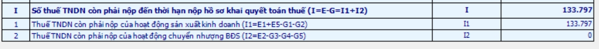
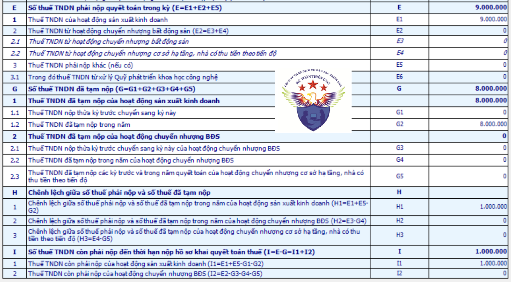

Hướng dẫn cách hạch toán thuế thu nhập doanh nghiệp phải nộp thì tạm tính quý và hạch toán phần chênh lệch sau khi làm tờ khai quyết toán vào cuối năm
Các tài khoản sử dụng để hạch toán thuế TNDN:
Đối với thông tư 133/2016/TT-BTC sử dụng các tài khoản sau:
+ Tài khoản 3334 - Thuế thu nhập doanh nghiệp: Phản ánh số thuế thu nhập doanh nghiệp phải nộp, đã nộp và còn phải nộp vào Ngân sách Nhà nước. (Theo Điều 41 của TT 133)
+ Tài khoản 821 - Chi phí thuế thu nhập doanh nghiệp: phản ánh chi phí thuế thu nhập doanh nghiệp của doanh nghiệp phát sinh trong năm làm căn cứ xác định kết quả hoạt động kinh doanh sau thuế của doanh nghiệp trong năm tài chính hiện hành. (Theo Điều 67 của TT 133)
Đối với thông tư 200/2014/TT-BTC sử dụng các tài khoản sau:
+ Tài khoản 3334 - Thuế thu nhập doanh nghiệp: Phản ánh số thuế thu nhập doanh nghiệp phải nộp, đã nộp và còn phải nộp vào Ngân sách Nhà nước. (Theo Điều 52 của TT 200)
+ Tài khoản 821 - Chi phí thuế thu nhập doanh nghiệp (Theo Điều 95 của TT 200)
Tài khoản 821- Chi phí thuế thu nhập doanh nghiệp có 2 tài khoản cấp 2:
+/ Tài khoản 8211 - Chi phí thuế thu nhập doanh nghiệp hiện hành (Đây là số thuế thu nhập doanh nghiệp phải nộp tính trên thu nhập chịu thuế trong năm và thuế suất thuế thu nhập doanh nghiệp hiện hành).
+/ Tài khoản 8212 - Chi phí thuế thu nhập doanh nghiệp hoãn lại. (Đây là số thuế thu nhập doanh nghiệp sẽ phải nộp trong tương lai phát sinh từ việc:Ghi nhận thuế thu nhập hoãn lại phải trả trong năm; Hoàn nhập tài sản thuế thu nhập hoãn lại đã được ghi nhận từ các năm trước.)
Chi tiết các bạn xem tại đây: Cách hạch toán tài khoản 821 theo thông tư 200
Chi tiết các bạn xem tại đây: Cách hạch toán tài khoản 821 theo thông tư 200
Đối với Thông tư 99/2025/TT-BTC thì sử dụng các tài khoản sau:
- Tài khoản 3334 - Thuế thu nhập doanh nghiệp: Phản ánh số thuế thu nhập doanh nghiệp phải nộp, đã nộp và còn phải nộp, bao gồm cả chi phí thuế thu nhập doanh nghiệp bổ sung theo quy định về thuế tối thiểu toàn cầu phải nộp, đã nộp và còn phải nộp vào NSNN.
Tài khoản 821 - Chi phí thuế thu nhập doanh nghiệp dùng để phản ánh chi phí thuế thu nhập doanh nghiệp của doanh nghiệp bao gồm chi phí thuế thu nhập doanh nghiệp hiện hành, chi phí thuế thu nhập doanh nghiệp hoãn lại phát sinh trong năm làm căn cứ xác định kết quả hoạt động kinh doanh sau thuế của doanh nghiệp trong năm tài chính hiện hành.
Tài khoản 821 - Chi phí thuế thu nhập doanh nghiệp dùng để phản ánh chi phí thuế thu nhập doanh nghiệp của doanh nghiệp bao gồm chi phí thuế thu nhập doanh nghiệp hiện hành, chi phí thuế thu nhập doanh nghiệp hoãn lại phát sinh trong năm làm căn cứ xác định kết quả hoạt động kinh doanh sau thuế của doanh nghiệp trong năm tài chính hiện hành.
Tài khoản 821 - Chi phí thuế thu nhập doanh nghiệp có 2 tài khoản cấp 2:
- Tài khoản 8211 - Chi phí thuế thu nhập doanh nghiệp hiện hành, bao gồm 2 tài khoản cấp 3:
+ Tài khoản 82111 - Chi phí thuế thu nhập doanh nghiệp hiện hành theo quy định của Luật thuế thu nhập doanh nghiệp
+ Tài khoản 82112 - Chi phí thuế thu nhập doanh nghiệp bổ sung theo quy định về thuế tối thiểu toàn cầu
+ Tài khoản 8212 - Chi phí thuế thu nhập doanh nghiệp hoãn lại;
Chi tiết về cách hạch toán TK 821 thì Công ty đào tạo Kế Toán Diệu Tâm mời các bạn tham khảo tại đây:
Cách hạch toán thuế thu nhập doanh nghiệp trong từng trường hợp như sau:
1. Cách hạch toán thuế TNDN phải nộp khi tạm tính quý:
* Trường hợp 1: Tạm tính ra số thuế TNDN phải nộp
Thì sẽ hạch toán 2 bút toán sau:
+ Bút toán 1: Hạch toán số thuế TNDN tạm tính quý vào chi phí thuế TNDN:
Khi xác định thuế thu nhập doanh nghiệp tạm phải nộp theo quy định của Luật thuế thu nhập doanh nghiệp, kế toán phản ánh số thuế thu nhập doanh nghiệp hiện hành tạm phải nộp vào ngân sách Nhà nước vào chi phí thuế thu nhập doanh nghiệp hiện hành, hạch toán:
Khi xác định thuế thu nhập doanh nghiệp tạm phải nộp theo quy định của Luật thuế thu nhập doanh nghiệp, kế toán phản ánh số thuế thu nhập doanh nghiệp hiện hành tạm phải nộp vào ngân sách Nhà nước vào chi phí thuế thu nhập doanh nghiệp hiện hành, hạch toán:
Nợ TK 821: Chi phí thuế TNDN
Có TK 3334: Số thuế TNDN tạm tính phải nộp của quý
+ Bút toán 2: Hạch toán số thuế TNDN tạm tính quý đã nộp vào NSNN:
Khi nộp thuế thu nhập doanh nghiệp vào NSNN thì căn cứ vào chứng từ nộp thuế để hạch toán:
Khi nộp thuế thu nhập doanh nghiệp vào NSNN thì căn cứ vào chứng từ nộp thuế để hạch toán:
Nợ TK 3334 - Thuế thu nhập doanh nghiệp
Có TK 111, 112,… Số tiền thuế đã nộp về NSNN
Thì sẽ không phải hạch toán
* Ví dụ: Trong năm 2026, công ty Kế Toán Diệu Tâm có tình hình tạm tính các quý và nộp thuế TNDN tạm tính như sau:
Qúy 1/2026: Có kết quả tạm tính là: Phải nộp thuế TNDN tạm tính quý là: 3.000.000đ
=> Phải hạch toán 2 bút toán sau:
+ Ngày 31/03/2026, Căn cứ vào kết quả tạm tính => Hạch toán số thuế TNDN tạm tính quý vào chi phí thuế TNDN:
+ Ngày 31/03/2026, Căn cứ vào kết quả tạm tính => Hạch toán số thuế TNDN tạm tính quý vào chi phí thuế TNDN:
Nợ TK 821: 3.000.000
Có TK 3334: 3.000.000
+ Ngày 10/04/2026, Nộp tiền thuế TNDN tạm tính quý 1/2026 bằng chuyển khoản => Hạch toán số thuế TNDN tạm tính quý đã nộp vào NSNN:
Nợ TK 3334: 3.000.000
Có TK 112: 3.000.000
Qúy 2/2026: Có kết quả tạm tính là: không nộp thuế TNDN tạm tính quý
=> Không phải hạch toán thuế TNDN tạm tính quý
(Cứ quý nào tạm tính ra số thuế TNDN phải nộp thì doanh nghiệp đi nộp tiền và hạch toán vào sổ sách kế toán. Còn quý nào tạm tính ra lỗ => Không nộp thuế TNDN tạm tính quý thì quý đó không phải hạch toán)
2. Cách hạch toán thuế TNCN sau khi quyết toán
Cuối năm tài chính, căn cứ vào số thuế thu nhập doanh nghiệp thực tế phải nộp theo tờ khai quyết toán thuế:
+ Nếu số thuế thu nhập doanh nghiệp thực tế phải nộp trong năm lớn hơn số thuế thu nhập doanh nghiệp tạm phải nộp, kế toán phản ánh bổ sung số thuế thu nhập doanh nghiệp hiện hành còn phải nộp, ghi:
Nợ TK 821- Chi phí thuế thu nhập doanh nghiệp hiện hành
Có TK 3334 - Thuế thu nhập doanh nghiệp.
+ Nếu số thuế thu nhập doanh nghiệp thực tế phải nộp trong năm nhỏ hơn số thuế thu nhập doanh nghiệp tạm phải nộp, kế toán ghi giảm chi phí thuế thu nhập doanh nghiệp hiện hành, ghi:
Nợ TK 3334 - Thuế thu nhập doanh nghiệp
Có TK 821- Chi phí thuế thu nhập doanh nghiệp hiện hành.
Cách xác định doanh nghiệp đã nộp thừa hay nộp thiếu tiền thuế TNDN theo tờ khai quyết toán thuế TNDN như sau:
Đến cuối năm thì doanh nghiệp sẽ thực hiện làm tờ khai quyết toán thuế thu nhập doanh nghiệp để xác định số thuế TNDN phải nộp của cả năm: Nếu có phát sinh NỘP THỪA hoặc NỘP THIẾU tiền thuế TNDN thì Căn cứ vào kết quả của tờ khai QTT TNDN mẫu 03/TNDN để hạch toán Phần chênh lệch giữa số thuế thu nhập doanh nghiệp thực tế phải nộp của cả năm khi quyết toán và số thuế thu nhập doanh nghiệp tạm nộp hàng quý trong năm

Xác định kết quả của Tờ khai quyết toán thuế TNDN mẫu 03/TNDN:
Xác định tại chỉ tiêu [I] – Số thuế TNDN còn phải nộp đến thời hạn nộp hồ sơ quyết toán thuế:
+ Trường hợp 1: Nếu chỉ tiêu I ra kết quả ÂM (Số tiền ở trong ngoặc) thì đây là số tiền thuế TNDN mà DN đã nộp thừa => DN không phải nộp thêm tiền thuế TNDN nữa.
+ Trường hợp 2: Nếu chỉ tiêu I ra kết quả DƯƠNG: thì đây là số tiền thuế TNDN còn phải nộp thêm sau quyết toán
+ Trường hợp 1: Nếu chỉ tiêu I ra kết quả ÂM (Số tiền ở trong ngoặc) thì đây là số tiền thuế TNDN mà DN đã nộp thừa => DN không phải nộp thêm tiền thuế TNDN nữa.
+ Trường hợp 2: Nếu chỉ tiêu I ra kết quả DƯƠNG: thì đây là số tiền thuế TNDN còn phải nộp thêm sau quyết toán
Cách hạch toán kết quả của tờ khai quyết toán thuế TNDN theo từng trường hợp như sau:
+ Trường hợp 1: Trên tờ khai QTT TNDN mẫu 03/TNDN: Chỉ tiêu [E] - Số thuế TNDN phải nộp quyết toán trong kỳ LỚN HƠN Chỉ tiêu [G] - Số thuế TNDN đã tạm nộp
=> Đây là trường hợp: Trong năm đã nộp thiếu tiền thuế TNDN (Số thuế TNDN phải nộp cả năm khi QT > Số thuế TNDN đã tạm nộp)
=> Khi nộp thiếu tiền thuế thì sẽ phải nộp thêm số tiền thuế nộp thiếu đó về NSNN
=> Khi nộp thiếu tiền thuế thì sẽ phải nộp thêm số tiền thuế nộp thiếu đó về NSNN
Hạch toán số thuế TNDN còn phải nộp thêm:
Nợ 821 - Chi phí thuế TNDN
Có 3334: - Số thuế TNDN phải nộp thêm (Số tiền phát sinh dương tại chỉ tiêu I)
Khi nộp số thuế TNDN còn phải nộp về NSNN:
Nợ 3334: Số thuế TNDN phải nộp thêm theo QT
Có 111/112: Số tiền thuế đã nộp về NSNN
+ Trường hợp 2: Trên tờ khai QTT TNDN mẫu 03/TNDN: Chỉ tiêu [E] - Số thuế TNDN phải nộp quyết toán trong kỳ NHỎ HƠN Chỉ tiêu [G] - Số thuế TNDN đã tạm nộp
=> Đây là trường hợp: Trong năm đã nộp thừa tiền thuế TNDN (Số thuế TNDN phải nộp cả năm khi QT < Số thuế TNDN đã tạm nộp)
Hạch toán số thuế TNDN nộp thừa:
Nợ 3334: Số thuế TNDN nộp thừa (Số tiền phát sinh âm tại chỉ tiêu I)
Có 821: Giảm chi phí thuế TNDN
+ Trường hợp 3: Trên tờ khai QTT TNDN mẫu 03/TNDN: Chỉ tiêu [E] - Số thuế TNDN phải nộp quyết toán trong kỳ BẰNG VỚI Chỉ tiêu [G] - Số thuế TNDN đã tạm nộp
=> Đây là trường hợp: Không nộp thừa cũng không nộp thiếu tiền thuế TNDN
(Không có sự chênh lệch => Không phải hạch toán sau quyết toán)
(Không có sự chênh lệch => Không phải hạch toán sau quyết toán)
3. Bài tập, ví dụ về hạch toán thuế thu nhập doanh nghiệp:
Trong năm 2026, công ty Kế Toán Diệu Tâm có phát sinh thuế TNDN như sau:
| Qúy | Kết quả tạm tính | Hạch toán |
| Qúy 1/2026 | Phải nộp thuế TNDN tạm tính quý là: 1.000.000đ | |
| Phải hạch toán 2 bút toán sau: | ||
| Ngày 31/03/2026 | Bút toán tính thuế TNDN tạm tính vào chi phí |
Nợ TK 821: 1.000.000
Có TK 3334: 1.000.000
|
| Ngày 10/04/2026 | Nộp tiền thuế TNDN tạm tính quý 1, hạch toán: |
Nợ TK 3334: 1.000.000
Có TK 112: 1.000.000
|
| Qúy 2/2026 | Phải nộp thuế TNDN tạm tính quý là: 2.000.000đ | |
| Phải hạch toán 2 bút toán sau: | ||
| Ngày 30/06/2026 | Bút toán tính thuế TNDN tạm tính vào chi phí |
Nợ TK 821: 2.000.000
Có TK 3334: 2.000.000
|
| Ngày 15/07/2026 | Nộp tiền thuế TNDN tạm tính quý 1, hạch toán: |
Nợ TK 3334: 2.000.000
Có TK 112: 2.000.000
|
| Qúy 3/2026 | Tạm tính ra không phải nộp thuế TNDN tạm tính quý | |
| Không phải hạch toán | ||
| Qúy 4/2026 | Phải nộp thuế TNDN tạm tính quý là: 5.000.000đ | |
| Phải hạch toán 2 bút toán sau: | ||
| Ngày 31/12/2026 | Bút toán tính thuế TNDN tạm tính vào chi phí |
Nợ TK 821: 5.000.000
Có TK 3334: 5.000.000
|
| Ngày 05/01/2027 | Nộp tiền thuế TNDN tạm tính quý 1, hạch toán: |
Nợ TK 3334: 5.000.000
Có TK 112: 5.000.000
|
Khi làm quyết toán thuế TNDN năm 2026 theo mẫu 03/TNDN ra kết quả như sau:

Xác định:
+ Số tiền thuế TNDN phải nộp của cả năm theo quyết toán là 9.000.000đ (Chỉ tiêu E trên tờ khai quyết toán mẫu 03/TNDN bằng 9.000.000)
+ Số thuế TNDN đã tạm nộp trong năm là 8.000.000đ (= Qúy 1: 1tr + Qúy 2: 2tr + Qúy 3: 0 + Qúy 4 = 5tr) (Chỉ tiêu G trên tờ khai quyết toán mẫu 03/TNDN bằng 8.000.000)
+ Số thuế TNDN đã tạm nộp trong năm là 8.000.000đ (= Qúy 1: 1tr + Qúy 2: 2tr + Qúy 3: 0 + Qúy 4 = 5tr) (Chỉ tiêu G trên tờ khai quyết toán mẫu 03/TNDN bằng 8.000.000)
So sánh chỉ tiêu E và chỉ tiêu G ta thấy:
Chỉ tiêu [E] - Số thuế TNDN phải nộp quyết toán trong kỳ là 9.00.000đ đang LỚN HƠN Chỉ tiêu [G] - Số thuế TNDN đã tạm nộp là 8.000.000đ
=> Đây là trường hợp: Trong năm đã nộp thiếu tiền thuế TNDN (Số thuế TNDN phải nộp cả năm khi QT > Số thuế TNDN đã tạm nộp)
=> Khi nộp thiếu tiền thuế thì sẽ phải nộp thêm số tiền thuế nộp thiếu đó về NSNN
=> Khi nộp thiếu tiền thuế thì sẽ phải nộp thêm số tiền thuế nộp thiếu đó về NSNN
Ngày 31/12/2026, Hạch toán số thuế TNDN còn phải nộp thêm theo tờ khai quyết toán mẫu 03/TNDN:
Nợ 821: 1.000.000
Có 3334: 1.000.000 (Số tiền phát sinh dương tại chỉ tiêu I)
Ngày 10/03/2027, Khi nộp số thuế TNDN còn phải nộp về NSNN bằng tiền gửi ngân hàng thì hạch toán:
Nợ 3334: 1.000.000
Có 112: 1.000.000
Công ty đào tạo Kế Toán Diệu Tâm mời các bạn tham khảo thêm bài viết:
4. Cách hạch toán thuế TNDN trong các nghiệp vụ khác:
4.1. Trường hợp phát hiện sai sót không trọng yếu của các năm trước liên quan đến thuế thu nhập doanh nghiệp phải nộp của các năm trước, doanh nghiệp được hạch toán tăng (hoặc giảm) số thuế thu nhập doanh nghiệp phải nộp của các năm trước vào chi phí thuế thu nhập hiện hành của năm phát hiện sai sót.
+ Trường hợp được ghi tăng chi phí thuế thu nhập doanh nghiệp hiện hành của năm hiện tại, ghi:
Nợ TK 8211 - Chi phí thuế thu nhập doanh nghiệp hiện hành
Có TK 3334 - Thuế thu nhập doanh nghiệp.
+ Trường hợp được ghi giảm chi phí thuế thu nhập doanh nghiệp hiện hành trong năm hiện tại, ghi:
Nợ TK 3334 - Thuế thu nhập doanh nghiệp
Có TK 8211 - Chi phí thuế thu nhập doanh nghiệp hiện hành.
4.2. Kết chuyển chi phí thuế TNDN:
- Cuối kỳ kế toán, kết chuyển chi phí thuế thu nhập hiện hành, ghi:
+ Nếu TK 8211 có số phát sinh Nợ lớn hơn số phát sinh Có thì số chênh lệch, ghi:
Nợ TK 911 - Xác định kết quả kinh doanh
Có TK 8211 - Chi phí thuế thu nhập doanh nghiệp hiện hành.
+ Nếu TK 8211 có số phát sinh Nợ nhỏ hơn số phát sinh Có thì số chênh lệch, ghi:
Nợ TK 8211 - Chi phí thuế thu nhập doanh nghiệp hiện hành
Có TK 911 - Xác định kết quả kinh doanh.